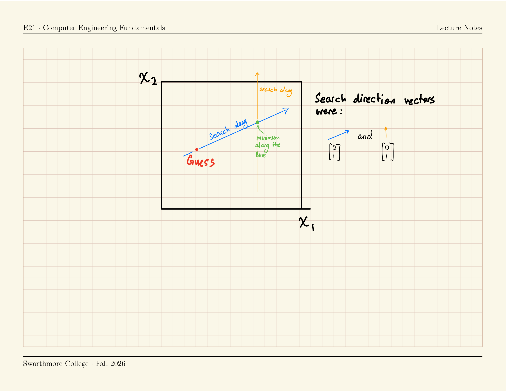
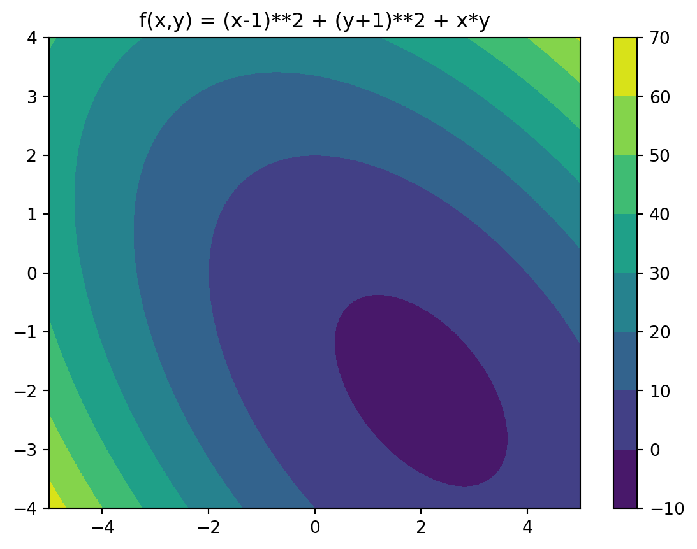
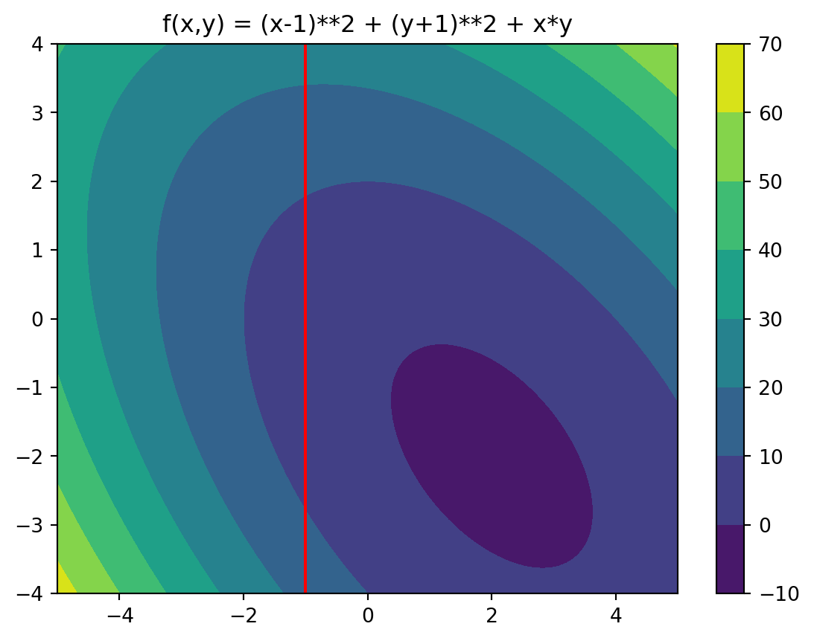
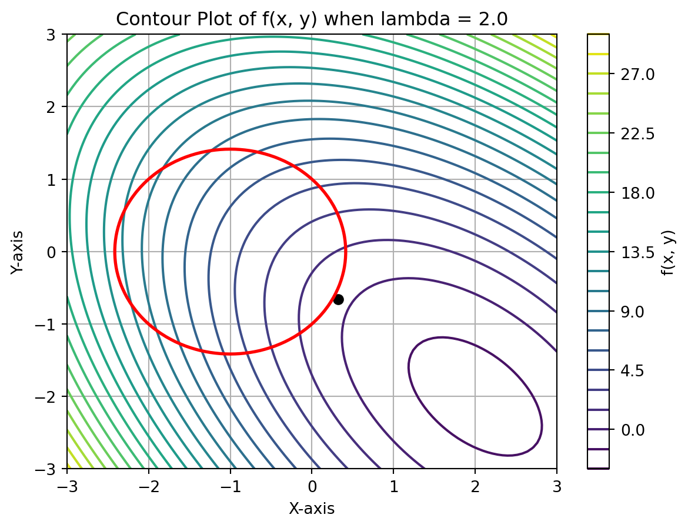
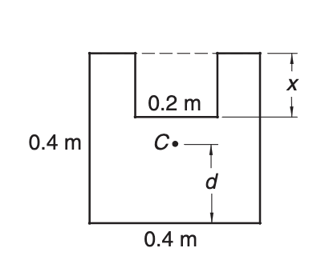

Find the minimimum of \[f(x,y) = (x-1)^2 + (y+1)^2 + xy\]
Idea: pick some direction vectors in \((x,y)\) space and optimize along each direction
Direction vectors should span the entire space, i.e., need as many independent (non-parallel) direction vectors as there are design variables.

Terminology for multi-dimensional problems
We often need to optimize functions of more than one variable, such as \[f(x,y) = (x-1)^2 + (y+1)^2 + xy. \tag{1}\]
We can rewrite Equation 1 as a scalar function of a vector variable as follows:
\[f \left( \begin{bmatrix} x \\ y \end{bmatrix} \right) = (x-1)^2 + (y+1)^2 + xy\]
We often use the convention that the independent variables in a given \(n\)-dimensional design problem are named \(x_1, x_2, x_3, ... x_n\) instead of \(x,y,z\)
Minimization along a direction
Write down the direction as a vector, let’s call it \(\boldsymbol{v}_1\)
In \(n\)-dimensional space, the direction vector will have \(n\) components
Multiply the direction vector with an unknown scalar, let’s call it \(\alpha\).
Substitute \(\alpha \boldsymbol{v}_1\) into \(f()\)
Note that \(f(\alpha \boldsymbol{v}_1)\) has only one unknown variable, \(\alpha\).
Minimize the function \(f(x,y) = (x-1)^2 + (y+1)^2 + xy\)
along the direction \(\boldsymbol{v} = \begin{bmatrix} 3 \\ 2 \end{bmatrix}\)
starting from an initial guess of \(\begin{bmatrix} 1 \\ 1 \end{bmatrix}\)
This is minimzed when \(38\alpha +13 = 0 \implies \alpha = - \frac{13}{38}\)
Naive n-dimensional optimization
Pick \(n\) non-parallel direction vectors \(\boldsymbol{v}_1, \boldsymbol{v}_2, \dots , \boldsymbol{v}_n\)
Optimize along each of these directions one by one using scipy.optimize.minimize_scalar or your own Golden Section Search program
Continue cycling through the directions repeatedly until the update becomes smaller than a desired tolerance.
Contour plots
A multi-dimensional optimization problem can be visualized using a contour plot.
Tools:
matplotlib.pyplot functions: contourf and contour
numpy’s meshgrid function
Contour plots are generally quite expensive
How many times (at least) did f get evaluated to make the plot below?
Code
from scipy.optimize import minimize_scalarimport matplotlib.pyplot as pltimport numpy as npdef f(x,y):return (x-1)**2+ (y+1)**2+ x*y# Create a grid of points:x = np.linspace(-5, 5, 101)y = np.linspace(-4, 4, 101)xx,yy = np.meshgrid(x,y)# Apply f to the grid of pointsfxy = f(xx,yy)plt.contourf(xx,yy,fxy)plt.title("f(x,y) = (x-1)**2 + (y+1)**2 + x*y")plt.colorbar()plt.show()

Contour plots and directions
Find the best direction vector starting from each of the given points
Code
from scipy.optimize import minimize_scalarimport matplotlib.pyplot as pltimport numpy as npdef f(x,y):return (x-1)**2+ (y+1)**2+ x*y# Create a grid of points:x = np.linspace(-5, 5, 101)y = np.linspace(-4, 4, 101)xx,yy = np.meshgrid(x,y)# Apply f to the grid of pointsfxy = f(xx,yy)plt.contourf(xx,yy,fxy,levels=10)plt.scatter([-4],[1],color='red')plt.scatter([4],[3],color='yellow')plt.title("f(x,y) = (x-1)**2 + (y+1)**2 + x*y")plt.colorbar()plt.show()
from scipy.optimize import minimizeimport numpy as npdef f(xx): x = xx[0] y = xx[1]return (x-1)**2+ (y+1)**2+ x*ysolution = minimize(f,np.array([0.,0.]),method='Powell')
Constraints
An optimization problem is sometimes subject to constraints
It is useful to think of the constraint geometrically in the design space
Examples:
Minimize function \(f(x,y)\) if \((x,y)\) are the points on a given parabola.
Minimize function \(f(x,y)\) is \((x,y)\) is located inside a given rectangle
Constraint: optimize on a curve
Minimize \(f(x,y) = (x-1)^2 + (y+1)^2 + xy\) subject to the constraint that \((x,y)\) satisfy the equation \(y =-0.2(x-1)(x+4)\)
Constraint: optimize inside a region
Minimize \(f(x,y) = (x-1)^2 + (y+1)^2 + xy\) subject to the constraint that \((x,y)\) lie on the half of the plane \(x \leq -1\)

Mathematical statement of constraints 1
Minimize \(f(\boldsymbol{x})\) subject to the constraints \(g(\boldsymbol{x}) = 0\) and \(h(\boldsymbol{x}) \leq 0\). Note that \(\boldsymbol{x} = [x,y]\) or \([x_1,x_2]\) in 2D.
Find what \(g(\boldsymbol{x})\) should be if:
\((x,y)\) must lie on the parabola \(y = x^2 +2x - 3\), find \(g(\boldsymbol{x})\)
\((x,y)\) must lie on the edge of a circle centered at \((2,1)\) and having a radius of \(1.5\)
Answers:
\(g(x,y) = y - x^2 - 2x + 3\)
\(g(x,y) = (x-2)^2 + (y-1)^2 - 1.5^2\)
Mathematical statement of constraints 2
Minimize \(f(\boldsymbol{x})\) subject to the constraints \(g(\boldsymbol{x}) = 0\) and \(h(\boldsymbol{x}) \leq 0\). Note that \(\boldsymbol{x} = [x,y]\) or \([x_1,x_2]\) in 2D.
Find what \(h(\boldsymbol{x})\) should be if:
\((x,y)\) must lie to the left of \(x=-1\)
\((x,y)\) must lie inside a circle centered at \((2,1)\) and having a radius of \(1.5\)
Answers:
In this case, \(x \leq -1\) so \(h(x,y) = x+1\) because \(h \leq 0 \iff x \leq -1\)
To lie inside a circle centered at \(x_0,y_0\), of radius \(r\), we need the following inequality to be true: \[(x-x_0)^2 + (y-y_0)^2 \leq r^2\]
If we define \(h(x,y) = (x-2)^2 + (y-1)^2 - 1.5^2\), \(h \leq 0\) is equivalent to satisfying \((x-x_0)^2 + (y-y_0)^2 \leq r^2\)
Satisfying constraints with Lagrange Multipliers
Toinimize \(f(\boldsymbol{x})\) subject to the constraints \(g(\boldsymbol{x}) = 0\) and \(h(\boldsymbol{x}) \leq 0\),
The penalty function is designed to be zero if no constraints are violated
It has a strictly positive value when constraints are violated.
\(\lambda\) is a Lagrange multiplier. It is a number.
The right value of \(\lambda\) is often found by trial and error
Start with a small value.
We can also choose different \(\lambda\)’s for the different constraints
Constrained optimization in Python
from scipy.optimize import minimize_scalar,minimizefrom numpy.linalg import normimport numpy as npimport matplotlib.pyplot as plt# GLOBAL VARIABLELAMBDA =2.0def f(xx): x = xx[0] y = xx[1]return (x-1)**2+ (y+1)**2+ x*ydef constraint(x,y):return (x+1)**2+ (y)**2-2def f_star(x_vector): x = x_vector[0] y = x_vector[1] lam = LAMBDA # parameter to changereturn f(x_vector) + lam*(constraint(x,y))**2solution = minimize(f_star,np.array([0.,0.]),method='Powell')# The rest of the code is just for plotting.x = np.linspace(-3, 3, 100)y = np.linspace(-3, 3, 100)X, Y = np.meshgrid(x, y)# Calculate the function values over the gridZ = f([X,Y])# Create a contour plotcontours = plt.contour(X, Y, Z, levels=20, cmap='viridis')# plot the constraintZ_con = constraint(X,Y)plt.contour(X,Y, Z_con, levels=[0], colors='red', linestyles='solid', linewidths=2)# Add labels and a color barplt.xlabel('X-axis')plt.ylabel('Y-axis')plt.grid()plt.colorbar(contours, label='f(x, y)')# plot the minimumplt.scatter(solution.x[0],solution.x[1],marker='o',color='black',label='found minimum')# Show the plotplt.title(f'Contour Plot of f(x, y) when lambda = {LAMBDA}')plt.show()

Engineering Optimization Problems
Find the value of \(x\) that minimizes the distance \(d\) between the base of the area shown and its centroid \(C\).

Engineering Optimization Problems
The cylindrical vessel of mass \(M\) has it center of gravity at \(C\). The water in the vessel has a depth \(x\). Determine \(x\) so that the center of gravity of the vessel–water combination is as low as possible. Use \(M = 115\) kg, \(H = 0.8\) m and \(r = 0.25\) m